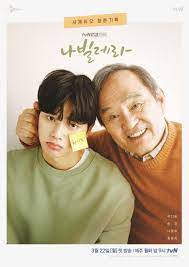

SERIES DO MEU CORAÇÃO
MINHA VÊNUS
Em Minha Vênus, Kim Young-ho é um personal trainer bem sucedido que atende as maiores
estrelas de Hollywood.
No entanto, depois de um escândalo envolvendo uma atriz, Young-ho retorna para a Coréia.
Enquanto isso, a advogada Kang Joo-eun enfrenta problemas com o peso e sua autoestima,
em especial depois de anos sendo considerada uma das garotas mais bonitas da escola.
Tudo parece piorar para Joon-eun quando o relacionamento de quinze anos chega ao fim.
Depois de se conhecerem, Young-ho topa ser o personal trainer particular de Joon-eu,
para ajudá-la na missão da jovem em recuperar sua saúde.
POUSANDO NO AMOR
A série conta a história de uma rica herdeira da Coreia do Sul que acidentalmente pousa em
um território inimigo, a Coreia do Norte. Lá, ela se apaixona por um soldado norte-coreano,
e os dois precisam lutar para sobreviver às forças armadas da Coreia do Norte
NAVILLERA

Navillera retrata o encontro de um idoso de 70 anos com um sonho e um jovem de 23 anos com
um dom. Eles aprendem a se cuidarem mutuamente e enfrentam o desafio de perseguir seus
sonhos apesar dos preconceitos da sociedade. Uma história emocionante, em que a empatia
e a união da família fazem a diferença
TUDO BEM NÃO SER NORMAL
Tudo Bem Não Ser Normal é uma história onde dois irmãos conhecem uma escritora que os ajudam
a passar por um processo de superação de seus traumas.
CLIMA DO AMOR

A trama é sobre uma mulher que trabalha no departamento de meteorologia e seu funcionário mais
novo, com quem se envolve romanticamente. Ela ainda trabalha com seu ex-noivo, que é casado
com a ex-namorada do rapaz. O encontro dos casais e o relacionamento secreto é o foco da
história.
Mande susgestões de filmes, desenhos ou séries. Estou precisando renovar minhas listas clique aqui
Para conhecer meus desenhos favoritos clique aqui
Para conhecer meus filmes favoritos clique aqui